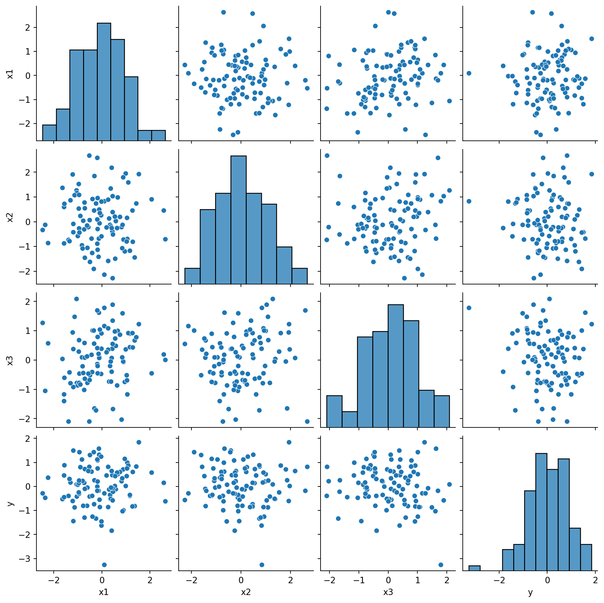
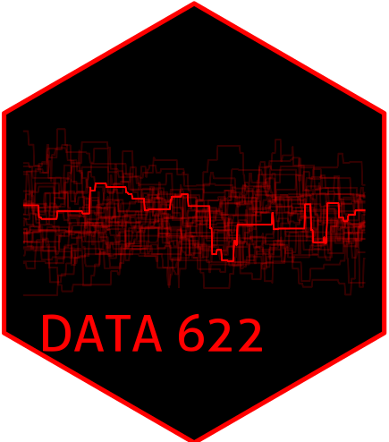
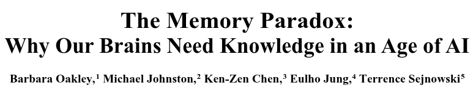
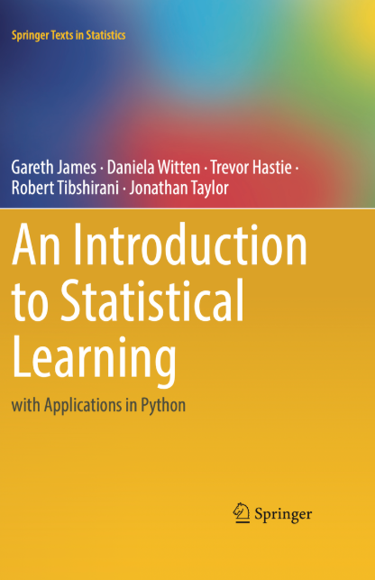
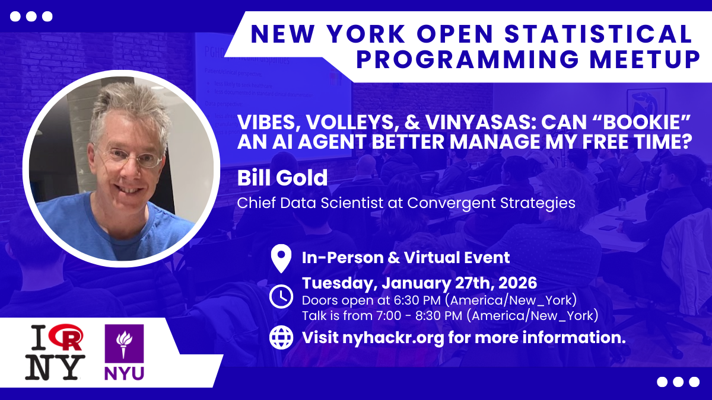
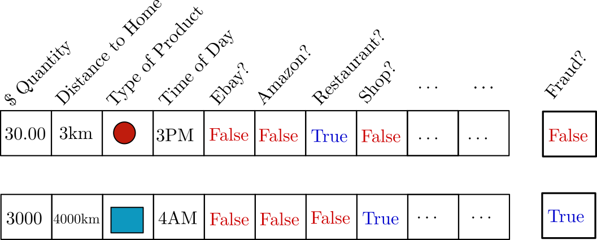
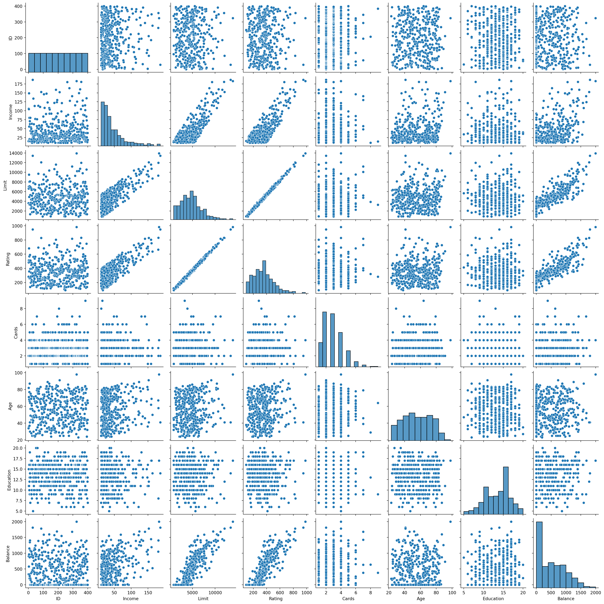
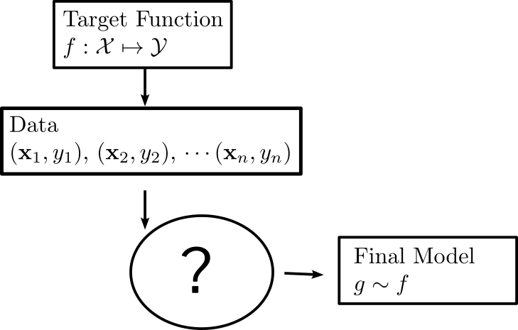
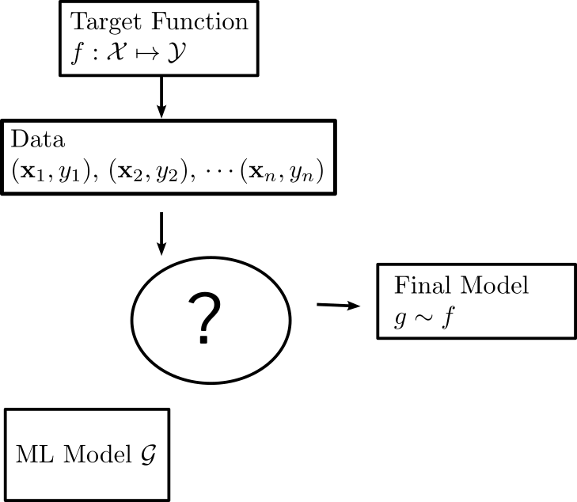
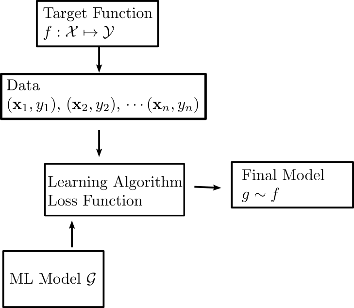

DATA 622 Meetup 1: What is Machine Learning?
George I. Hagstrom
2026-01-26
Welcome to DATA 622!
What to Expect
- Meetups Monday 6:45-7:45PM
- There is a poll on the course
slackchannel ‘#data-622-spring-2026’
What to Expect
- We have a course
slackslack channel
- Click Here to Join
- This is also for the entire department!
What to Expect
- There is a course website
8 Homework Assignments
- Lab assignments to be done using
pythonandquarto - Submit both code and
pdf - Expectations for figures/code/descriptions elevated from other classes
Group Project
- Teams of 3-4
- Build a ML app to solve a problem, put in ‘production’
- Start forming teams now, Proposal due March 1st
- If you are in a group, don’t be the problem. I’ll mediate disputes
Group Project
- Reach Goal: CUNY Pitchfest
- Annual CUNY wide event to put your programming or data science project in front of industry professionals
Course Software
pythonis primary language of the course- Tell me asap if you don’t know
python/haven’t taken DATA 602 or 608- You can still take the class if you want but will be tougher
What to do if your computer is slow?
- Talk to me!
- posit.cloud
- google colab
LLM Use? Conflicting Goals
- I want you to become experts on the material
- I also want you to be experts on using LLMs
Research on LLMs in Education
- Early days, but mixed results
- Opinions range from ‘LLMs stop you from being able to think for yourself’ to ‘Concern over LLMs is just another moral panic’
- Your Brain on ChatGPT (I’m skeptical)
- Why knowledge is important in the age of AI (makes excellent points)
Research on LLMs in Education
Abstract
In the age of generative AI and ubiquitous digital tools, human cognition faces a structural paradox: as external aids become more capable, internal memory systems risk atrophy. Drawing on neuroscience and cognitive psychology, this paper examines how heavy reliance on AI systems and discovery-based pedagogies may impair the consolidation of declarative and procedural memory – systems essential for expertise, critical thinking, and long-term retention. We review how tools like ChatGPT and calculators can short-circuit the retrieval, error correction, and schema-building processes necessary for robust neural encoding. Notably, we highlight striking parallels between deep learning phenomena such as “grokking” and the neuroscience of overlearning and intuition. Empirical studies are discussed showing how premature reliance on AI during learning inhibits proceduralization and intuitive mastery. We argue that effective human-AI interaction depends on strong internal models – biological “schemata” and neural manifolds – that enable users to evaluate, refine, and guide AI output….
What I have Seen

- Do not let yourself become reliant on LLMs
My Recommendations
- Ask LLMs how something works
- Use LLMs for things you can easily check that are low stakes
- Use LLMs to check for grammar issues, to reword a sentence you struggle with
- Understand model differences and use professional tools (You can get 1 year free of google AI Pro…)
- Experiment!
My recommendations
- Don’t copy and paste
- Type by hand LLM generated code, understand how it works, maybe even delete it and try to recreate it
- Don’t use it to write or analyze for you
- Writing is thinking
- Don’t turn in something you don’t understand
Textbooks
- Standard text for people coming into machine learning from a variety of areas

Textbooks
- Hands on Machine Learning Very practical more CS style book that focuses on python implementations

Textbooks
- DevOps for Data Science Accessible book to start learning some things needed to get models in production

Course Outline
| Date | Module | Main Deliverables | ||
|---|---|---|---|---|
| Jan 26 | Introduction to Machine Learning | |||
| Feb 2 | Bias-Variance Trade-Off | Lab 1 | ||
| Feb 9 | The Linear Model | Lab 2 | ||
| Feb 16 | Classification | |||
| Feb 23 | Generative Classification Models and Class Imbalance | Lab 3 | ||
| Mar 2 | Resampling and Cross-Validation | Project Proposal | ||
| Mar 9 | Regularization and Model Selection | Lab 4 | ||
| Mar 16 | Tree Models | |||
| Mar 23 | Ensemble Models | Lab 5 | ||
| Mar 30 | Causal Inference | Minimal Viable Product Demo | ||
| Apr 6 | No Meetup (Spring Break) | |||
| Apr 13 | Model Interpretation, Communication, and Ethics | Lab 6 | ||
| Apr 20 | Neural Networks | |||
| Apr 27 | Deep Learning | Lab 7 | ||
| May 4 | Unsupervised Learning | |||
| May 11 | Pretrained Models | Lab 8, Final project Writeup and Demo |
This Week:
- Read: Chapter 1 and Section 2.1 of
ISLP - Watch/Code: Chapter 2 Lab
ISLPand vignette video - Interact: Post in course slack about project
- HW: Start Lab 1
Events This Week!

Events This Week!
Learning from Data
- Goals Today:
- Examples of Machine Learning
- The Machine Learning Problem
- Types of ML
Example: Transaction Fraud Detection
Problem: Fraudulent transactions are costly
Can be up several % of total revenue, billions of dollars

Transaction Fraud Detection
Problem: Fraudulent transactions are costly
Solution: Fradulent transactions are different
Transaction Fraud Detection

Transaction Fraud Detection
Can create a formula: \[ y = f(\mathbf{x}) \]
Transaction Fraud Detection
Can create a formula: \[ y = f(\mathbf{x}) = \mathrm{sign}\left(w_1x_1 + w_2x_2 + w_3x_3 + \cdots + w_n x_n \right) \]
Transaction Fraud Detection
Can create a formula: \[ y = f(\mathbf{x}) = \mathrm{sign}\sum_{i=1}^n w_ix_i \]
Transaction Fraud Detection
- Where do the weights \(w_i\) come from?
- Could have an expert come up with them
- Machine Learning Idea: Find weights that minimize error
When to use Machine Learning?
- There is a pattern to learn
- There aren’t mathematical formulas that give you the answer already
- You have data
When to use Machine Learning?
- There is a pattern to learn
- There aren’t mathematical formulas that give you the answer already
- You have data

When to use Machine Learning?
- There is a pattern to learn
- There aren’t mathematical formulas that give you the answer already
- You have data
Statistical Rethinking
When to use Machine Learning?
- There is a pattern to learn
- There aren’t mathematical formulas that give you the answer already
- You have data

\[ \mathbf{F} = -\frac{Gm_1m_2\hat{\mathbf{r}}}{\|\mathbf{r}\|^2} \]
When to use Machine Learning?
- There is a pattern to learn
- There aren’t mathematical formulas that give you the answer already
- You have data
This is the one dealbreaker here. Without data there is no possibility for machine learning.
Components of Supervised Learning
- Input \(\mathbf{x}\) (amount, location, time of day, transaction type)
- Also called features, predictors, variables
- Output \(y\) (real or fraudulent transaction)
- Target function \(f: \mathcal{X}\mapsto \mathcal{Y}\) (ideal formula for detecting fraud)
- Unknown and unknowable
- Data: \((\mathbf{x}_1,y_1),\, (\mathbf{x}_2,y_2),\, \cdots,(\mathbf{x}_n,y_n)\)
- Model \(g: \mathcal{X}\mapsto \mathcal{Y}\) (also called hypothesis, find this to make predictions)
How the components fit together

How the components fit together

How the components fit together

Models
- The set \(\mathcal{G}\) can vary in complexity a lot
- Linear Models \(y=\mathbf{w}\cdot\mathbf{x}+x_0\)
Models
- The set \(\mathcal{G}\) can vary in complexity a lot
- Decision Trees
Learning Algorithms
- Learning algorithm selects final model \(g\) from \(\mathcal{G}\)
- Almost always minimization of a loss function: \[ \mathrm{min}_{g\in\mathcal{G}} \sum_{i=1}^N \mathrm{loss}(y_i,g(\mathbf{x}_i)) \]
- Find the function that “best” fits the data
Learning Algorithms
- For some models (linear models, support vector machines, etc), exact formula or guaranteed algorithms exist
Learning Algorithms
- For fancy models, decision trees, neural networks, Gaussian Processes, no guarantee exists and the algorithm is a dark art
Learning Algorithms
- Optimization is not the focus here
- We will talk about it, especially at the end
- Take 609 for the nitty gritty details
Examples of Supervised Learning
- Predicting Credit Risk
- \(\mathbf{x}\): Income, Age, Education, Debt
- \(y\): Will they default on loan?
- \(f(\mathbf{x})\) Credit approval formula
- \((\mathbf{x_i},y_i)\) past data on loan repayments
Examples of Supervised Learning
- Predicting Movie Ratings
- \(\mathbf{x}\): ratings of watched movies
- \(y\): rating they would give a movie if they watched
- \(f(\mathbf{x})\) ideal movie rating function
- \((\mathbf{x_i},y_i)\) data on user ratings
Examples of Supervised Learning
- Predicting cancer diagnosis
- \(\mathbf{x}\): gender, tumor location, size, and properties
- \(y\): Type of tumor
- \(f(\mathbf{x})\) Ideal diagnosis function
- \((\mathbf{x_i},y_i)\) data collected from patient brain scans and tumor biopsies
Goals of Modeling
- Prediction: What will \(y\) be for a given set of \(\mathbf{x}\)?
Your entire goal is maximizing the accuracy of your prediction of \(y\). Understanding/insight about how \(y\) is determined by each variable in \(x\) is not important
Example: Image recognition, text translation, fraud detection
Goals of Modeling
- Inference/Understanding: Which of the predictors \(\mathbf{x}\) influence or are associated with \(y\), and how?
Example: What is the relationship between having a doorman and rent?
2b. Causal Inference: What will happen to \(y\) if I take a certain action?
Example: A/B testing, randomized controlled trials, if I hire a doorman for my building how much can I increase rent?
Goals of Modeling
- Decision Making or Management: If I observe \(\mathbf{x}\) what should I do?
Example: Based on the observed fish stocks, water temperature, and ocean productivity, what should be the allowable fish catch?
Goals of Modeling
- Different models are good for different goals
ISLP
Regression and Classification
- Regression problems have continuous \(y\)
- Predicting income, temperature, cost
- Typical loss function \[ \mathrm{loss(y_1,g(x_1))} = (y_1-g(x_1))^2 \]
Regression and Classification
- Classification problems have discrete \(y\)
- Tumor type, fraud or real transaction, Default or not on loan
- Typical loss function is misclassification:
Unsupervised Learning
- In some problems, the label \(y\) is not known to us
Unsupervised Learning
- Algorithms exist to group points together or reduce dimension

Reinforcement Learning
- Training labels \(y\) not known
- But can get an evaluation of \(g(\mathbf{x})\)
- How humans learn, “touching hot stove”
alphago,alpha zero, fine tuning of LLMs
Thanks!
DATA 622